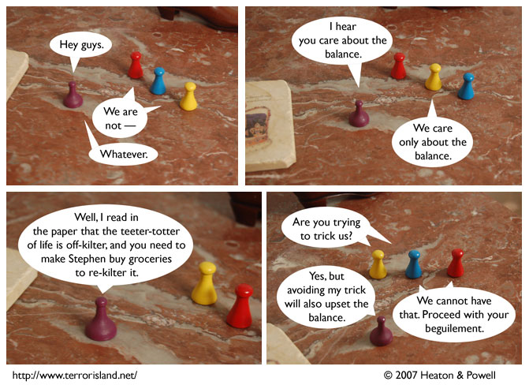

Strip #189
— Monday, August 27, 2007
Sid doesn’t actually read the paper.
Notes, Thoughts, &c.
Ben’s Notes
Hey, if anyone who’s reading this right now wants to talk about tiling the hyperbolic plane, come in the Terror Island IRC channel. (#TerrorIsland on irc.freenode.net) We’ve been trying to work out a useful coordinate system, and could use some help.
Lewis’s Notes
I wish I had Spider-Man’s superpowers, except instead of having the relative strength and speed of a spider, I’d want the relative number of legs. (Eight.)
I wrote Lewis’s comments today. -Ben